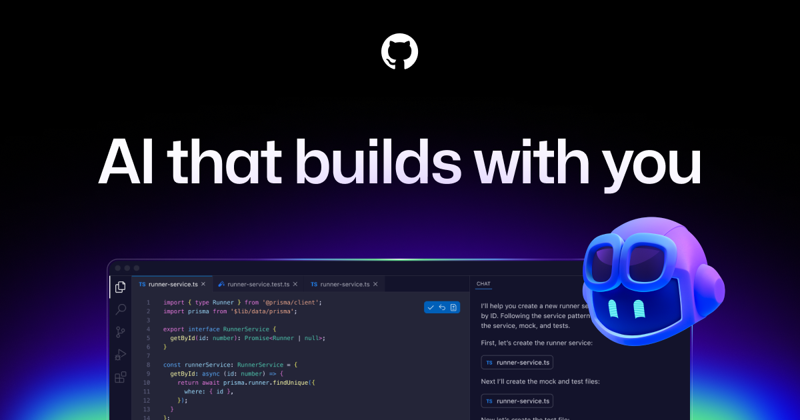

Introduction
GitHub Copilot is an AI-powered coding assistant that can help developers write code faster and explore solutions more efficiently. In web development, it can support HTML structure, CSS styling ideas, JavaScript functions, debugging, and code suggestions. This website introduces GitHub Copilot, explains how it can be used in web development, and discusses its benefits, concerns, and key concepts.
The goal of this project is to present research in a clean and organized website using HTML and CSS.
Key Terms
- AI coding assistant
- Autocomplete
- Prompt
- Code generation
- Productivity
- Debugging
- Privacy
Featured Image

GitHub Copilot promotional image illustrating AI-assisted coding and developer collaboration.
Table of Contents
Why This Topic Matters
AI tools are becoming more common in software development. Learning how GitHub Copilot helps web developers and where it should be used carefully is important for both students and professionals.